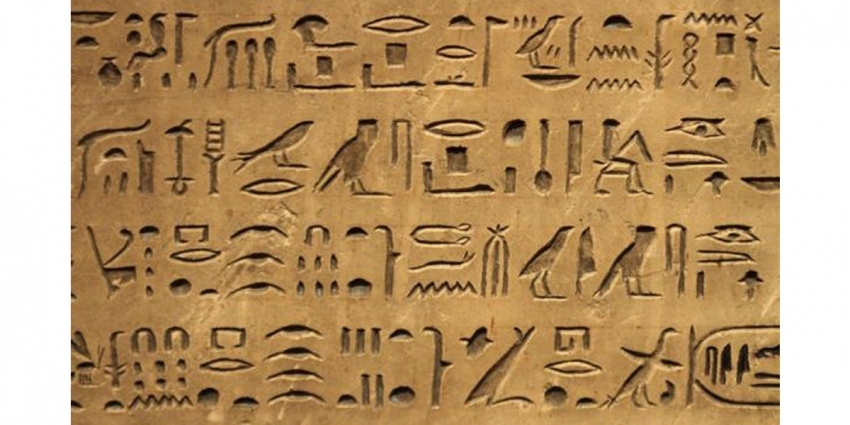

Las primeras civilizaciones: Mesopotamia y Egipto.
Religión, cultura y arte egipcios.
Religión egipcia.
Los egipcios eran politeístas, es decir, creían en muchos dioses que dominaban los elementos naturales (agua, aire, fuego…). A menudo aparecían representados con cuerpo humano y cabeza de animal. Los egipcios pensaban que los ritos religiosos eran necesarios, por ello cada dios contaba con un templo al que sólo podían entrar el faraón y los sacerdotes.
Tot: secretario de los dioses y patrón de los escribas.
Dioses egipcios.El juicio de Osiris.
Cultura.
La escritura se utilizó en Egipto desde el 3250 a. C. En sus inicios fue una escritura jeroglífica, es decir, representaba el significado de las palabras por medio de figuras o dibujos. Con ella se realizaron inscripciones en las paredes de los templos y de las tumbas y se redactaron documentos oficiales en papiro, una especie de papel obtenido de la planta del mismo nombre.

Escritura jeroglífica.(Dominio público)
Arte egipcio. Arquitectura: templos.
La arquitectura egipcia se caracterizaba por:
Las construcciones eran en piedra y tenían un carácter monumental o colosal (edificios grandes).
No usaban arco, sino edificios adintelados: techos planos apoyados sobre enormes columnas.
Para decorar usaban: relieves y pinturas en muros, y esculturas de grandes dimensiones.
Los templos eran las casas de los dioses, preservadas por los sacerdotes. Solían tener la misma estructura:
Dromos: larga avenida flanqueada por esfinges (escultura de animales fantásticos con cuerpo de león y cabeza humana) que protegían el templo.
Pilono: pared con muros inclinados donde se encuentra la entrada al templo, y a cada lado obeliscos (monolito vertical que terminan en una pequeña pirámide que representaba el camino que unía la Tierra con el cielo) y estatuas colosales.
Sala hipetra: patio rodeado de columnas, al que tenía acceso el pueblo.
Sala hipóstila: sala cubierta y llena de columnas. Solo tenían acceso nobles y altos funcionarios.
Santuario: al fondo del templo, donde se conservaba la estatua del dios.
Otras zonas del templo eran: el lago sagrado o estanque (simbolizaba el origen de la vida), la casa del sumo sacerdote, el granero y campos de cultivos del templo.
También existía otro tipo de templo llamado speos, que se excavaba en la roca.
Los egipcios creían en la vida después de la muerte y pensaban que era imprescindible conservar los cuerpos para esa segunda vida, por ello desarrollaron la momificación: método para evitar que los cadáveres se descompusieran que consistía en secarlos y envolver en vendas. Después, guardaban la momia en un sarcófago y se rodeaba de un ajuar (alimentos, vestidos, joyas y figuritas como sirvientes llamadas ushebtis).
Momificación.
Las tumbas eran construcciones provistas de cámaras funerarias donde se depositaba el sarcófago con la momia. Solían tener falsas cámaras y pasadizos para confundir a los ladrones e impedir el robo de los ajuares. Había tres tipos de tumbas:
Mastaba: edificio rectangular de paredes inclinadas y una sola planta. La cámara funeraria era subterránea.
Pirámide: tumba en la que se enterraba a los faraones del Imperio Antiguo, provista de cámara funeraria a la que se llegaba a través de una red de pasadizo y trampas. Eran de dos tipos:
- Escalonada: dividida en plantas (era la superposición de mastabas). Ej.: Zoser (Saqqara).
- Clásica: de paredes lisas. Ej.: Keops, Kefrén y Micerinos (Guiza).
Hipogeo: tumba subterránea excavada en el interior de una montaña para evitar. Ej.: Valle de los Reyes (Luxor).


{kind=link}
{kind=link}
{kind=link}
{kind=link}